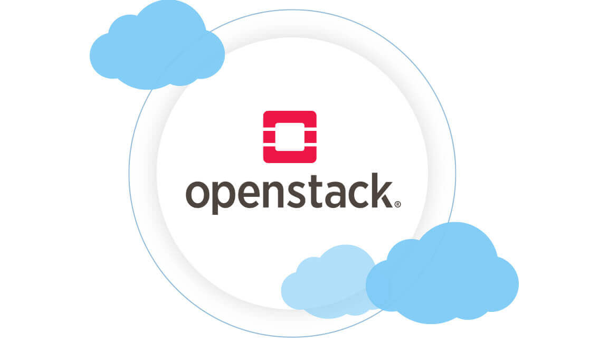
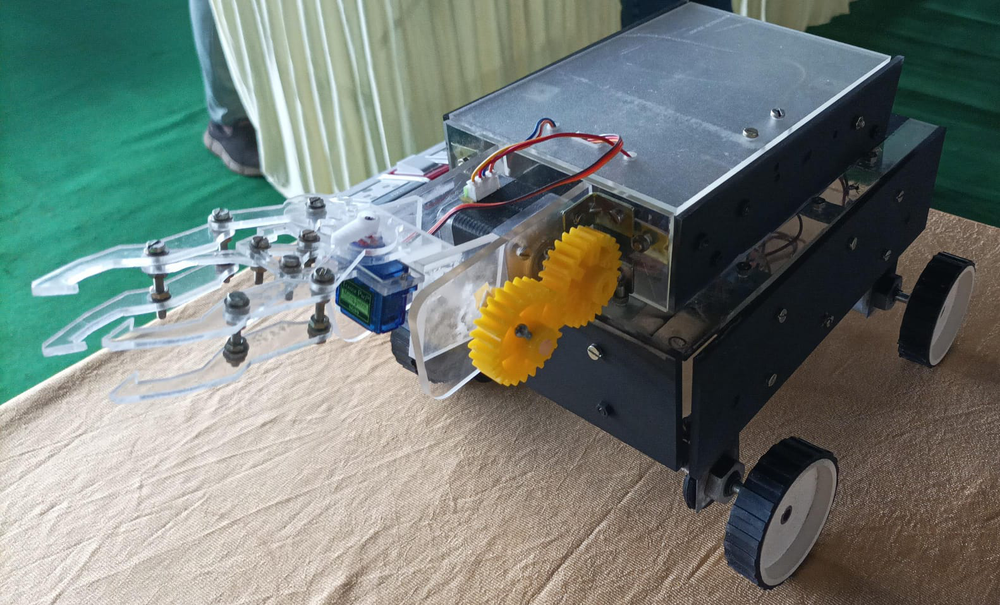
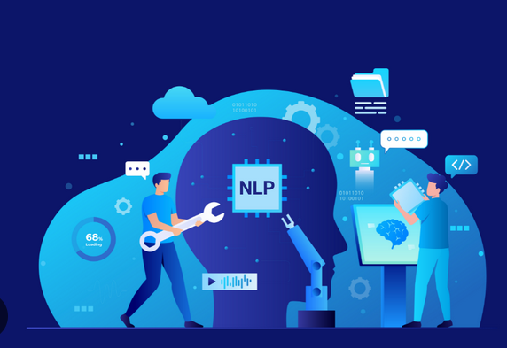
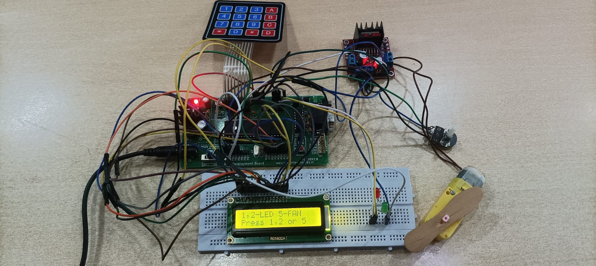

Ananya Deshpande
About Me
As a dedicated final-year computer science engineering student, I have honed my skills in web development and cloud computing projects. Passionate about exploring and specializing in cloud computing, I am committed to continuous learning and growth in this field. My approach combines strong leadership, management, and communication skills to foster collaboration and open communication within team environments, aiming to unlock the full potential of collaborative efforts.
Education
Primary Education
V.S.Pillay School
Senior Secondary
Smt. N.K.Thakkar High School
Pre-University Education
Vidyaniketan Pre-University Science College
Bachelor of Computer Science Engineering
KLE Technological University
Skills
- Project Management
- Service Focused
- Strong Decision Maker
- Creativity and Innovation
Technical Skills
- Web Development
- Cloud Computing
- Machine Learning
- C
- C++
- Networking Basics
Courses & Certifications
- JNCAA Getting Started With Cloud
- Getting Started With Networking
- AWS Cloud Practitioner Essentials
- Kubernetes Course from a DevOps guru
Projects
Dynamic VNF Placement and Consolidation in SDN using Machine Learning
Network Function Virtualisation makes things simpler by separating network tasks from hardware. This simplification reduces complications, speeds up the introduction of new services. NFV also enhances flexibility by adjusting to changes in demand and managing virtual functions effectively. Placing VNFs at the right compute node optimizes the use of resources, preventing wastefulness and lowering expenses. Consolidation of VNFs, directed by predictive models using machine learning, minimizes power consumption for efficient resource utilization.
Sentiment Analysis

Machine Learning based project on Sentiment Analysis on Twitter Dataset performing a comparative approach using different machine learning based models such as DistilBERT and Logistic Regression with Support Vector Classification.
GRABIT(Pick & Place Bot)
A semi-automatic Movable machine that can pick & place objects, which works on commands of program applications and controlled using a Mobile App.
Language Detection System
Using Natural Langauge Processing, helps detect which language when dialect is provided. This project focuses on creating a Language Detection model using Natural Language Processing. The dataset used comprises text details for 17 different languages, including English, French, Spanish, and others. The goal is to train a model that predicts the language of a given text accurately, enabling applications in machine translation, sentiment analysis, and document identification.
Career Guidance (DSA based)
From Dreams to Reality..is a project aimed at helping individuals explore and navigate the myriad of options available to them after completing their 12th-grade education. The completion of high school or its equivalent marks a significant transition point where students are faced with a multitude of pathways and choices for graduation in the field of their choice.
Smart Control System
A microcontroller-based smart remote control system, programmed with Microchip Studio, utilizes an ATmega32 microcontroller, an LCD screen, and a keypad. It enables versatile device control via user inputs, featuring multiple operational modes for efficient management of home appliances. Real-time feedback and status updates from the integrated LCD screen enhance user interaction and convenience.